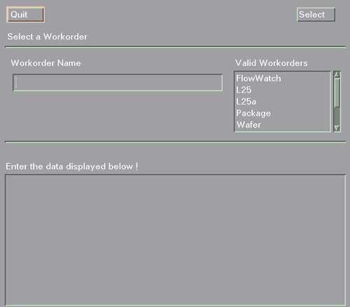
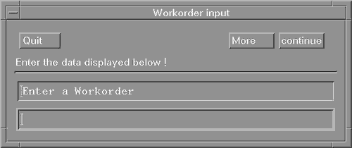
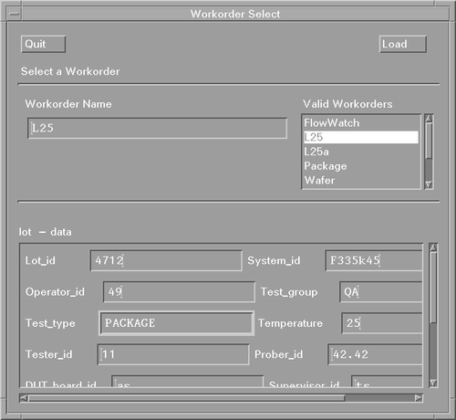
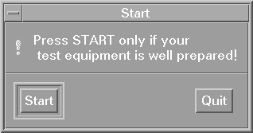
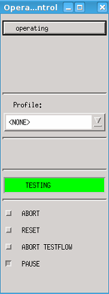

Executing a workorder from the operation control panel
Workorders are assigned to individual users and are listed in the workorder directories of their respective home directories for execution. Any individual user-operator, supervisor or engineer-can therefore only execute workorders listed in their workorder directory.
About this task
Procedure
-
In the main Operation Control window (see Starting SmarTest with supervisor mode, for example), click
Execute Workorder.
Provided the default setting for CONTROL_DEVICE has not been changed, a screen similar to that of the figure below appears (see Displaying the Workorder Select Screen for details on the CONTROL_DEVICE parameter); otherwise a screen similar to that of the second figure below appears.
Note It must be pointed out at this stage that as the particular application model you use completely determines the appearance of the user interface-what screens appear, when, etc.-some of the following screens in this section (and when they occur) may not be relevant for you.The screens and explanations that follow are based on the application model wafer_auto that comes as standard with SmarTest. Wafer_auto has been chosen as it provides several useful screens that help explain the process of executing a workorder.

If your screen appears as the second figure below, simply enter the workorder name and all details about the workorder as requested, until the screen in step 4 appears. Otherwise, proceed as follows.

- In the Valid Workorders browser, click your desired workorder.
-
Click the select button, or double-click your desired workorder.
A screen similar to that shown below appears.

-
Fill in the lot - data parameters, and click Load to load the desired
workorder, with the required parameters.
Some of these parameters may already be filled in, depending on whether you have engineer, supervisor or operator status.
With engineer status you see
- parameters that must be filled in at run time-Lot_id or temperature, for example
- parameters inherent in your application model, that were filled in during workorder creation-supervisor ID, tester ID, for example
- any parameters that were specified in the Application Data Editor (in the Development
Environment).
With Supervisor status you do not see the Application Data Editor Inputs.
With Operator status you only see the run-time parameters.
Once you click Load, SmarTest begins loading the workorder. Provided that the respective system flag is set, the Graphic Result Code appears, showing either a wafer (if you are testing wafers) or a triangle (representing a package, when you are testing packages), while the report window displays the name of the workorder, device and components of the test program. The start dialog box also appears, see the figure below.

-
When ready, click Start.
The Operation Control window shows four extra toggle buttons (see the next figure):
- ABORT
- RESET
- ABORT TESTFLOW
- PAUSE

How these buttons are used to control the test run is described later in this chapter (see Controlling a Production Run).
Functional changes
- Introduced before SmarTest 6.3.2